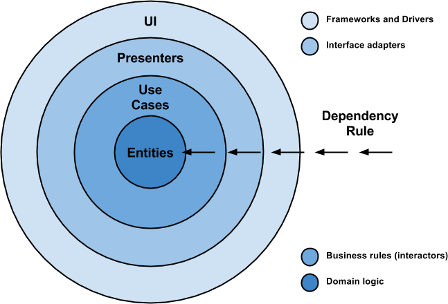
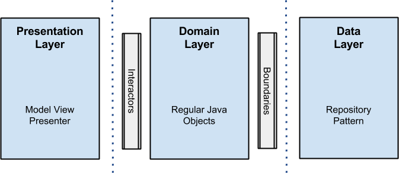
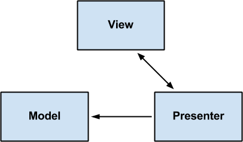
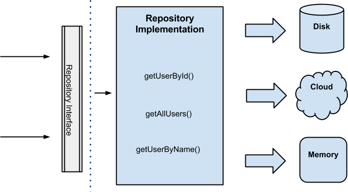

更多 Android 博文请关注我的博客 http://xuyushi.github.io
本文为翻译，在原文的基础上略有改动
http://fernandocejas.com/2014/09/03/architecting-android-the-clean-way/
Getting Started
当你写一个软件时不仅要满足需求，还要使得系统健壮、易于测试、方便修改。这样才能满足需求的变化。写满足这些条件的程序通常是很难很复杂的。这就是为什么提出 “the clean architecture”，这可能是在开发任何应用程序时都是一个不错的办法
理念很简单。clean 架构 代表了一组拥有如下特点的实践
- 框架独立
- 容易测试
- UI独立
- 数据库独立
- 不依赖任何中介 
实际情况可能和上图不一致，图片只是示意，不是一定要分为4层，我们需要考虑的是依赖规则，依赖关系只能是外层依赖内层，内层不应该知道外层的存在
为了更方便的理解，下面是一些名词解释
- Entities: APP 的业务逻辑
- Use Cases:这些用例从
Entities中流入流出，也被称作Interactors - Interface Adapters:这些 adapter 将data 转换为方便 Use Cases使用的结构。Presenters 和 Controllers 都属于这里
- Frameworks and Drivers: 所有 UI 细节、工具、框架
Our Scenario
...（作者例子的视频展示）
Android Architecture
我们的目标是分离业务逻辑，使得业务逻辑对外部不感知。这样我们在外部可以独立对业务代码进行测试
为了达成这个目标，我们的目的是将项目分为三层，每层都有自己的目的并且独立于其它层
值得一提的是为了达到每层都独立，每一层都有自己的数据结构。（在代码可以看到通过 mapper来进行层与层之间的数据变换）
框架大致是这样

NOTE: 我没有使用任何的第三方库（除了使用 gson 来解析数据，junit，mockito，robolectric 和 espresso 来测试），不使用第三库的原因是我希望例子能更清晰。不用犹豫使用 ORMs做存储，或者依赖注入框架，或者任何使你更方便的的工具（记住重复造轮子并不好）。
Presentation Layer
view 和动画的逻辑的地方。使用了 MVP 模式（可以看这篇 http://xuyushi.github.io/2016/02/28/MVP/ ），你也可以使用 MVC,MVVM。我不会深入讲解这部分。fragments、activities都只是 view，没用业务逻辑， ，渲染的逻辑也在这
其中的Presenters是由** interactors (use cases)**组成的，这些 use cases 在 UI 线程之外的其他线程做一些工作，并且在回调中更新 view

Domain Layer
所有的业务逻辑都在这一层，对于 Android 工程，所有的interactors (use cases)的实现都在这一层。
这一层是纯 java 的，没用 android 的相关依赖，所有的外部交互都是通过接口实现的
Data Layer
所有应用需要的数据都通过这一层的UserRepository（domain 层定义接口的实现）获取，这里使用了 Repository Pattern 模式，通过 factory 选取不同的 data 的数据源
举个栗子，当我们需要获取一个 userID，如果disk 缓存有则使用他，若没有，则获取数据，并把数据保存在 disk 缓存中
核心的思想是 data 的获取对客户端透明，客户端无需关注数据的来源，内存，disk，或者网络。客户端只需要获取数据

NOTE：同上个 NOTE，数据库的实现比较简单，可以使用第三方库。 不要重复造轮子
Error Handling
这一直是一个值得讨论的话题，我在这里分享一下我的解决方案。我的策略是使用回调，举个栗子，如果在repository产生事件之后，callback中包含两个方法，onResponse()和onError()，后者把错误封装在 ErrorBundle 类里：这样带来一个问题，因为错误通过层层传递导致代码可读性变差。
另一方面，我们可以实现一个 event bus 系统来抛出错误，这种解决方法类似于 GOTO 语句。在我的观点中，当你订阅了多个事件是你很容易弄混
Testing
对于测试，对于每层我都给出了不同的解决方案
- Presentation Layer: 使用
android instrumentatio和espresso做集成 和功能测试 - Domain Layer: 使用
JUnit和mockito做单元测试 - Data Layer: 使用
Robolectric（因为这层有 Android 的依赖）和 junit、mockito做集成和单元测试。
Show me the code
https://github.com/android10/Android-CleanArchitecture
通过 module 来表示不同的层
- presentation: Android Module
- domain: 没有 依赖Android的 java Module
- data: Android Module，获取数据的地方
- data-test: Data 的测试。
# Conclusion
就像Bob大叔所说的，『Architecture is About Intent, not Frameworks』。
确保的应用满足以下几点：
- 易维护 Easy to maintain
- 易测试 Easy to test.
- 高聚合Very cohesive.
- 低耦合 Decoupled.
**我现在根据这个架构为模板做一个开源 APP，完成以后会开源，详见请见 http://xuyushi.github.io/tags/从零开始/ **